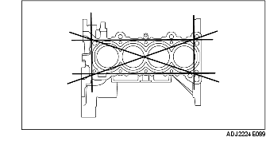
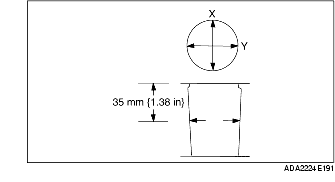

Cylinder block inspection
1. Measure the distortion in six directions as shown in the figure using a square and feeler gauge.

2. Measure the cylinder bore using a cylinder bore gauge. Measurement positions are in the X and Y directions at 35 mm {1.38 in} below the top surface of the cylinder.

- Maximum bore diameter
- ZJ: 74.0-74.013 mm {2.9134-2.9138 in}
- ZY, Z6: 78.0-78.013 mm {3.0709-3.0713 in}